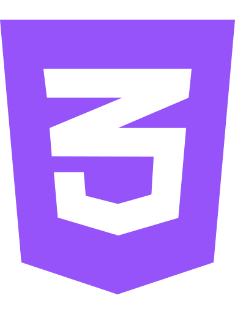
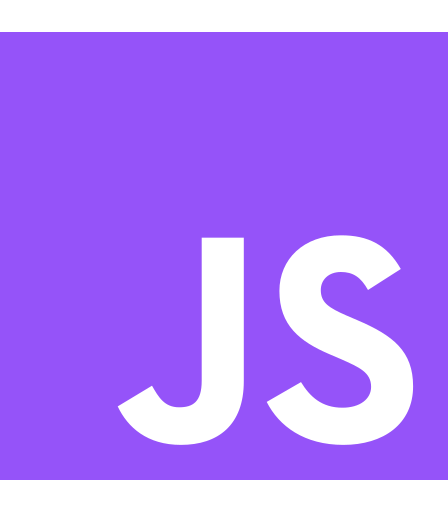
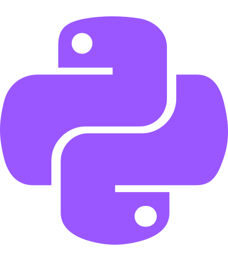

I'm a senior at Texas A&M University and an up
and coming
frontend software engineer focused on
building fast, responsive, and user-centric web applications. I take
pride in delivering high-quality solutions that not only enhance
user experience and support business goals, but also contribute to
creating positive, meaningful impact in the world.
Here's a bit more about me.
I'm a 24 year-old
Senior at Texas A&M University majoring in
Technology Management, where I’ve developed a
strong foundation in Python programming, MySQL, and AI/Machine
Learning. However, my true passion lies in
front-end development and coding; bringing
ideas to life through clean, efficient, and visually engaging
interfaces.
I love solving problems through code and exploring
how technology can drive innovation. I’ve built experience in
programming, systems analysis, and project management, which helps
me not only write clean, efficient code but also understand how
technical solutions fit into broader business goals. I’m excited
about opportunities where I can contribute my technical skills
while continuing to grow as a developer and problem-solver. I take pride in
delivering high-quality solutions that enhance user experience,
align with business goals, and make a meaningful, positive impact in
the world.


